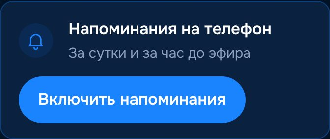
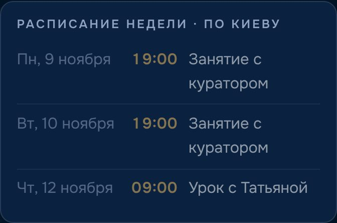
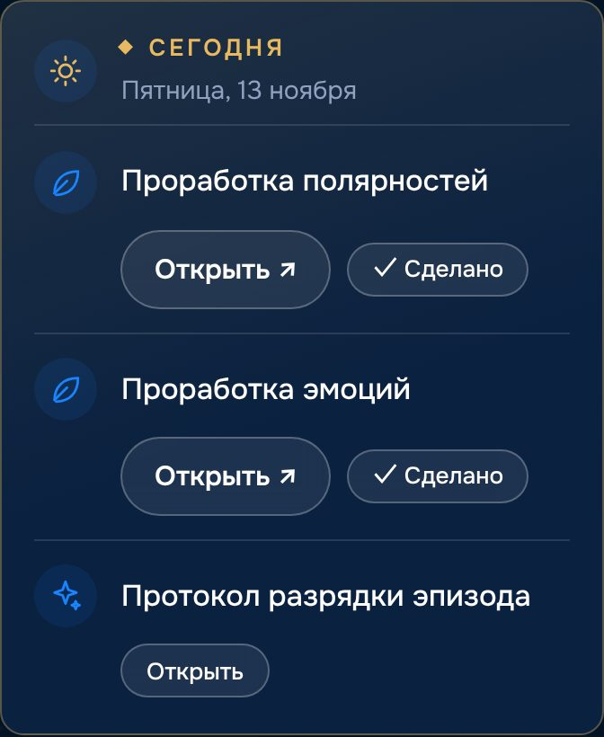
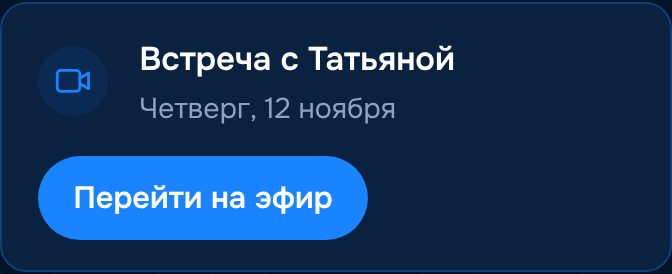
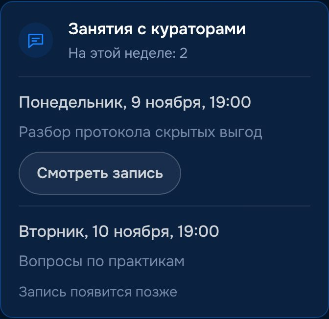
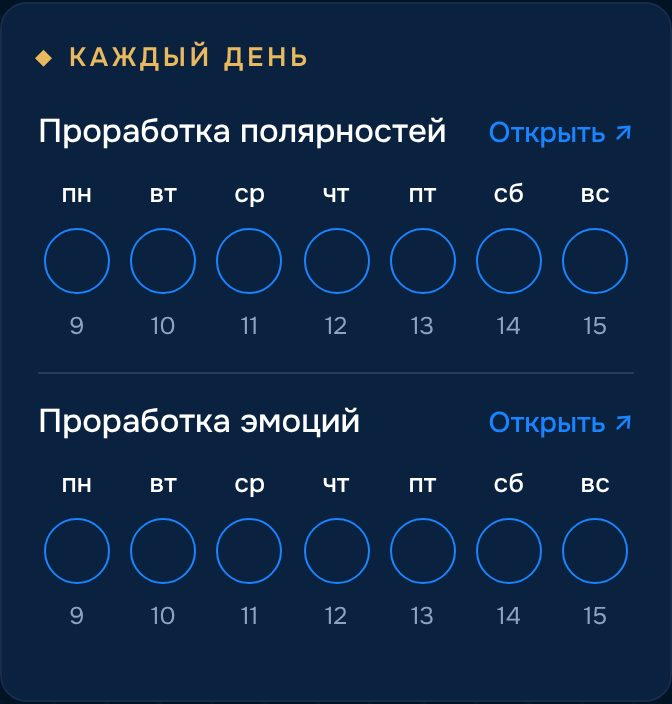
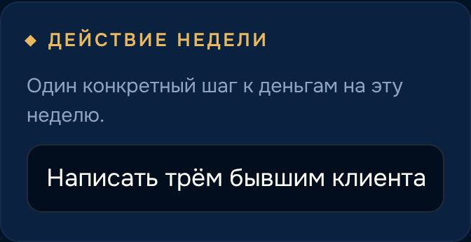
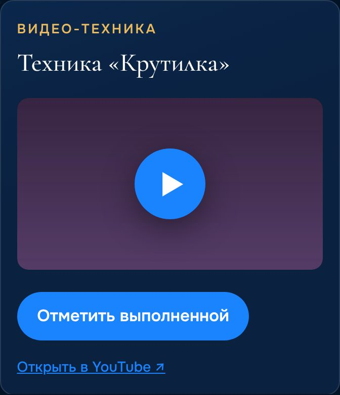
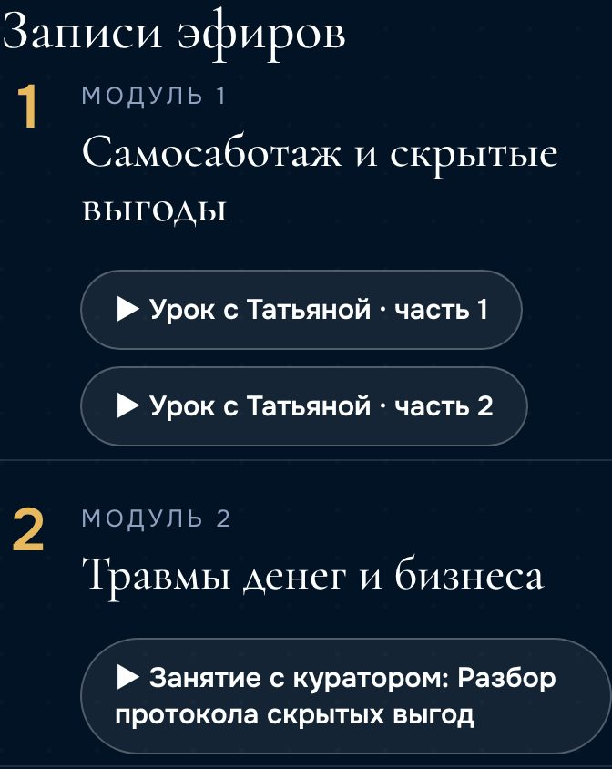

Психология финансового масштаба
Как пользоваться трекером
Коротко: регистрация, напоминания и что отмечать каждую неделю.
Открыть трекерШаг 1
Регистрация
- Откройте трекер → «Регистрация».
- Имя, тариф, ник в Telegram, почта и пароль.
- «Зарегистрироваться».

Шаг 2
Иконка и напоминания
Иконка на главном экране
- iPhone, Safari: «Поделиться» → «На экран „Домой“».
- Android, Chrome: ⋮ → «Добавить на главный экран».
Напоминания об эфирах
- Вкладка «Старт» → «Включить напоминания».
- Телефон спросит разрешение → «Разрешить».
Уведомление придёт за сутки и за час до эфира. Нажмите — откроется эфир.

Шаг 3
Разделы трекера

Шаг 4
Неделя
Главный раздел. Трекер сам открывает текущую неделю.
Расписание
Время по Киеву. Даты этой недели — под названием недели.

Сегодня
Что сделать сейчас: эфир, ежедневная практика, новая практика.

Эфиры
- «Перейти на эфир» — урок с Татьяной.
- «Подключиться» — занятие с куратором.


Отметки недели
Отмечайте, что сделали: урок, занятие с куратором, бадди.

Каждый день · недели 1–2
Полярности и эмоции: «Открыть ↗» → после практики отметьте день.

Записи для себя
- Действие недели — один шаг к деньгам.
- Главный инсайт и итог недели.

Шаг 5
Практики
Открываются по ходу модуля.
Практика
- «Пройти практику».
- «Описание» → «Отметить выполненной».

Видео-практика
Нажмите ▶ — видео откроется прямо в трекере. После — «Отметить выполненной».

Техники · неделя 1
Метафорические карты, эмоции, полярности — «Открыть».

Шаг 6
Записи и итоги
Записи
Все записи эфиров по модулям: ▶ Урок с Татьяной, ▶ Занятие с куратором.

Итоги
Собираются сами. В конце программы — доход и оценка себя «после».

Главное — каждый день заходить на «Неделю» и отмечать, что сделали.
Открыть трекер